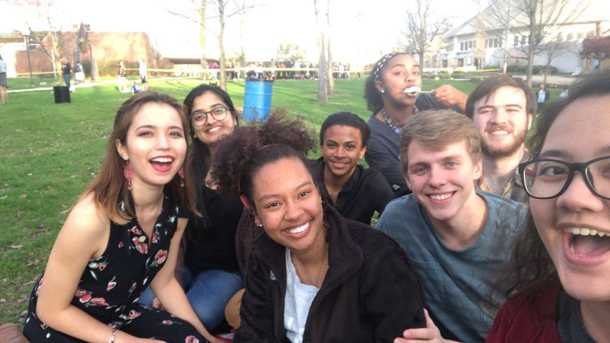
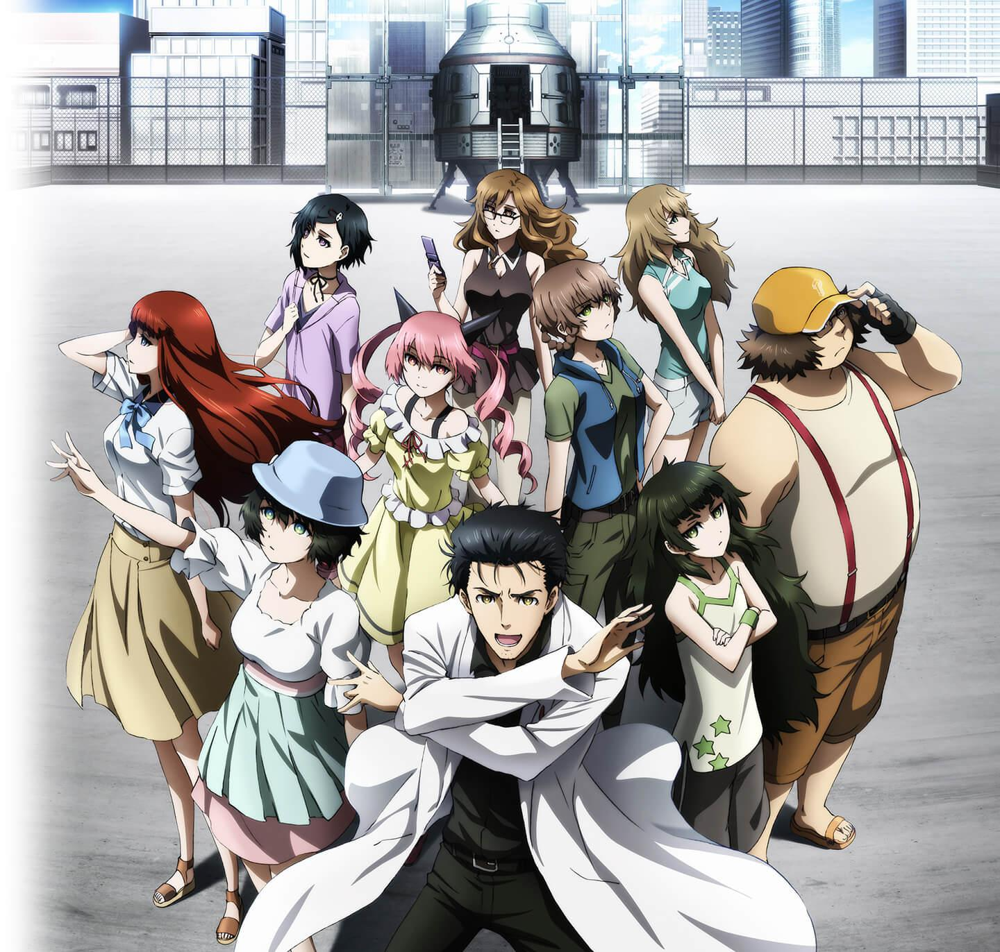

Ethan is Cool
And Other Interesting Facts About Him
Links:
Early LifeHigh School
University
Interests
Early Life

Ethan was born in Hartford Connecticut on April 25, 1998. His parents are Leo Sayles and Tanya Sayles. Three of his four siblings were also born in Connecticut, however, the family moved to Illinois before the birth of the final child. Ethan is the middle of five, the children are Benjamin, Faith, Ethan, Nathaniel, Anna Rose, in order of oldest to youngest. Several years later the family moved again to Tennessee, where they would live for the next 7-8 years. Ethan excelled at math from a young age, so being homeschooled, his mother had him skip 2nd grade. He was homeshcooled until middle school, and then middle school was at a very small school that had a total of 32 students k-12th. While he was growing up Ethan was very active, though he also loved to play video games.
HighSchool

Right before entering highschool, the family moved again to North Carolina. In North Carolina Ethan attended Thomas Jefferson Classical Academy which is a college preperatory charter school. His freshman year, Ethan joined the swim team, and in his sophomore year he joined the track team. Ethan was part of the karate club for his first three years. He joined Mu Alpha Theta (the math honours society), as well as NLHS (National Latin Honours Society), and NHS (National Honours Society). In his senior year Ethan was around for the inception of the shogi club (shogi being Japanese Chess). During his senior year Ethan started going by Ethan (his real name is Jonathan). He used his senior year as a trial run to see if he liked the name.
University and Beyond
 |
 |  |
Ethan is a senior at Anderson University. He is part of the Honours program, and is double majoring in computer engineering and computer science. He lived in Smith Hall for his first three years, and now resides in Chesterfield. His first year Ethan participated in an ultimate frisbee IM, and a volleyball IM. He has worked in the engineering club at various points throughout his semesters, and now he is the secretary for the engineering club. During his junior year he joined the Asian Student Association (ASA), as well as the E-Sports club. During his second semester in his junior year, Ethan became a member of the ASA council. During the summer Ethan had the opportunity to conduct artificial intelligence research with a US Air Force mentor, and now plans to gain funding from the government for graduate school. Ethan is currently planning to pursue a Ph.D in computer science, with an emphasis on computer vision.
Interests and Hobbies
|  |  |
Ethan is a nerd in many different ways. He has an interest in programming, and video game development. He also has an interest in video games, and is part of the E-Sports club an Anderson University. He watches anime and is attempting to learn Japanese in his spare time. He also loves to read books, and is currently expanding his own personal library. Ethan has an interest in artificial intelligence, and is currently conducting research with Dr. Tarplee at Anderson University related to deep learning.